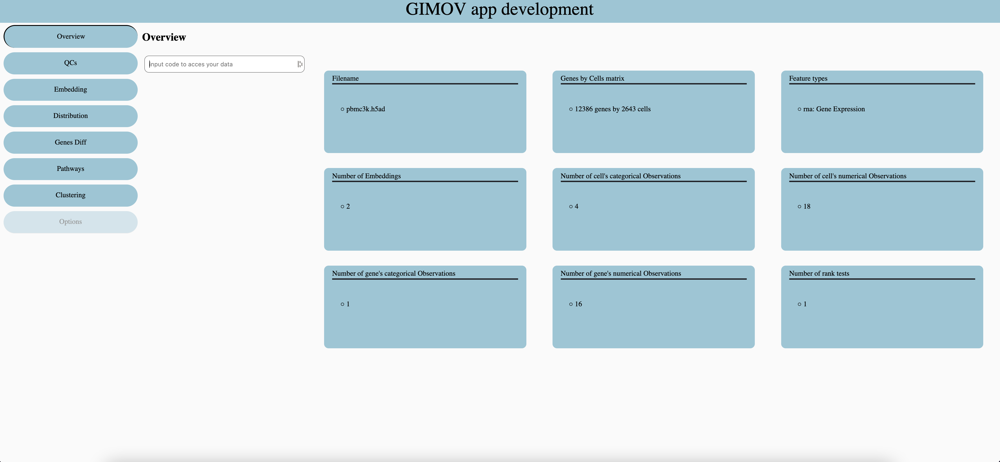
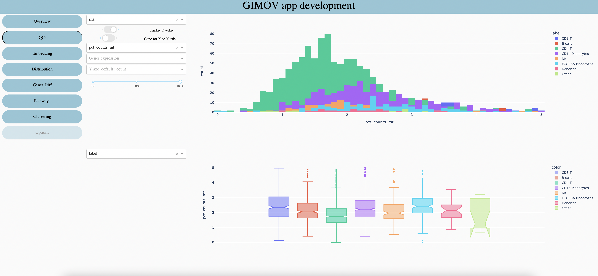
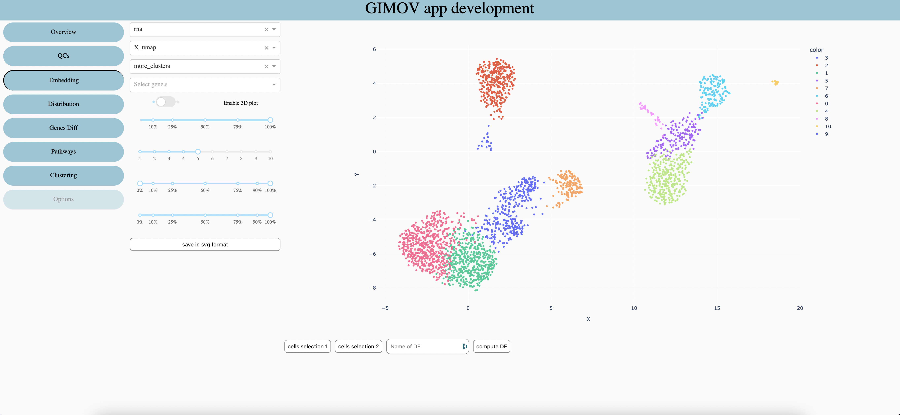
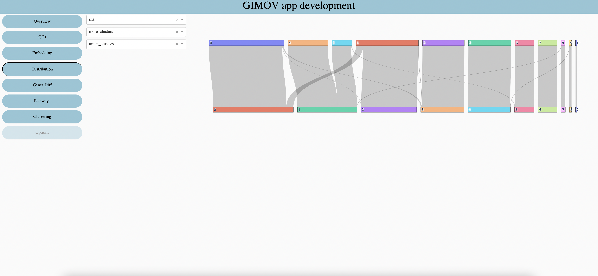
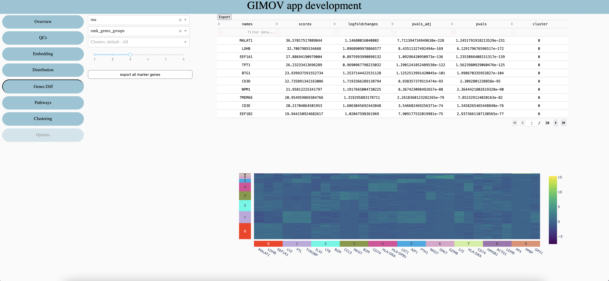
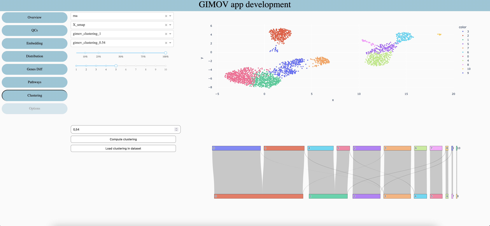
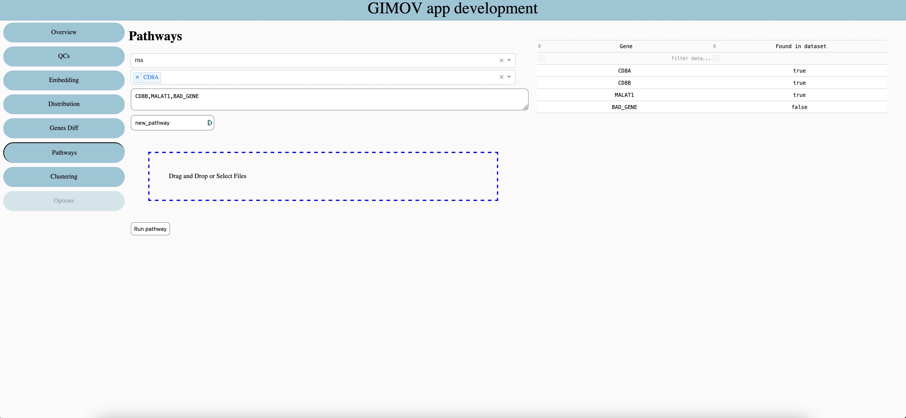

Tutorial
GUIMOV provide severals functions divide in tabs. Each tabs focus on a main purpose and offer some tools or graphs to explore it.
Overview
Each dataset has a unique code, which is given by the bioinformatic team. For more safety the server only store the code’s hash.
QCs
Select the feature type you want to explore, it may have multiple features in multi omics datasets, or when several datasets are gather.
Show groups, stacked (like the screen) or one behind the other.
When a gene is selected (5 and 6 are optional) you can display his expressionon Y axis (1 screen) or on X axis of first plot and Y axis of second plot (2 screen).
Select a numerical metadata (real values) to display on graphs (display on second graph if any gene are selected or if gene expression is display on Y axis).
Select a gene to explore his expression (write the first letter to show all options of the dropdown).
Select a numerical metadata to display when gene expression is display on X axis.
When groups are display one behind the other, it can be useful to change the opactiy of all groups.
Select a categorical metadata (clusters, sample, etc) to display on both graphs.
Embedding
Features type
Select which embeddind to use (coordinates of cells). Select ‘spatial ’ with a spatial dataset to display the image of sample behind points.
Seletec metadata to explore (change the color of graph)
Seletec one or more gene (sum expression)(priority against metadata)
When embedding allow it permit to display a 3d graph (which can be move in all directions)
Percentage of cells to display (randomly choose). Use it for large datasets (>10’000 cells) or with a small computer.
Size of points on the graph
Range of color to use when display a numerical metadata
Percentage of points opacity, usable only with spatial datasets.
Save graph in svg format
In order to compute Differential Expression on choosen cells, use the ‘lasso’ tool of plotly to select cells. Then press ‘cells selection 1’, repeat for the second selection. Chose the name of the DE and compute with ‘compute DE’. The resuls can be seen in the Differential Expression tab.
Distribution
Features type
First categorical metadata
Second categorical metadata
Differentially express genes
Features type
Differential Expression already calculated
Clusters to explore in table (default all clusters included)
Numbers of Genes per clusters in the heatmap
Export all genes in csv. (very large file, nbGenes * nbClusters rows)
Export the table in csv.
Clustering
Features type
Embedding use for the first graph
Clustering use for the first graph and at the top of the second one
Clustering use at the bottom of the second graph
Percentage of cells to display
Size of points in first graph
Select the resolution of clustering
Calculate clustering with selected resolution to use in 3. and 4.
Load 3. clustering in dataset as categorical metada
Pathways
Features type
Select Genes to add in pathways, write first letter to see suggestion
Write or copy / paste genes, split with comma without spaces.
Enter name of pathways
Get genes from first columns of csv or excel files.
Run the pathways, the results is store as numerical metadata in dataset.
Options
Loading …